Существует несколько способой структурирования данных, к основным относятся объекты и массивы
создадим объект
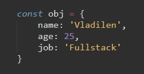Так выглядят эти же данные в виде массива
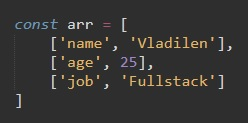Т.е. массив состоящий из массивов с двумя элементами. Первый в качестве ключа, второй в качестве значения
В JS у глобального класса Object есть два метода, позволяющие транспортировать либо массив в объект, либо наоборот
entries - этот метод переводит объект к записи массива
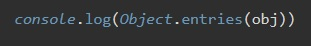fromEntries - этот метод переводит массив к записи объекта
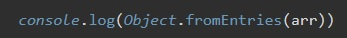Map - это структура данных, которая по своему функционалу очень схожа с обычными объектами
Создание Map
const map = new Map()
В конструктор Map можно передавать массив значений
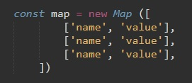Так как у нас уже есть массив, передадим его в конструктор
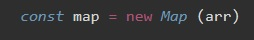Если вывести теперь в консоль наш map? то мы увидим, что данные были приведены к структуре схожим на объект. В качестве ключей может быть все что угодно, даже сам объект
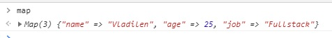get - возвращает значение по ключу
console.log(map.get('job'))
set - записывает по ключу key значение value
map.set('newField', true)
has - проверяет наличие ключа в коллекции, возвращает либо false либо true
console.log(map.has('job'))
delete - удаляет элемент по ключу, если удаление прошло успешно, то возвращается значение true
size - возвращает текущее количество элементов
console.log(map.size)
clear - очищает коллекцию от всех элементов
map.clear()
for of
выводим на экран элементы map
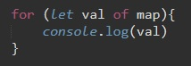так же можно использовать методы:
forEach
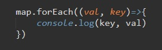Методу forEach входным параметром идет функция с двумя колбеками: значения ключа и сам ключ
Первый вариант:
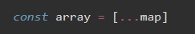... - этооператор spread - позволяет позволяет создать массив из элемента
Второй вариант
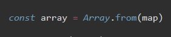const mapObj = Object.fromEntries(map.entries)
создадим Set и в конструктор передадим массив значений
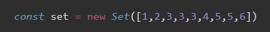теперь если в консоль вывести наш set то мы получим результат
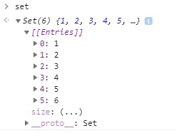Структура данных Set принимает в себя только уникальные значения, т.е. исключает повторения
add - добавляет новое значение в коллекцию
set.add(10)
has - проверяет наличие значения в set. возвращает либо true либо false
set.has(10)
size - возвращает количество значений в set
set.size
delete - удаляет значение, возвращает либо true либо false
set.delete(10)
clear - очищает set
set.clear()
values() - возвращает все значения set
set.values()
key - принимает в себя значения ключей